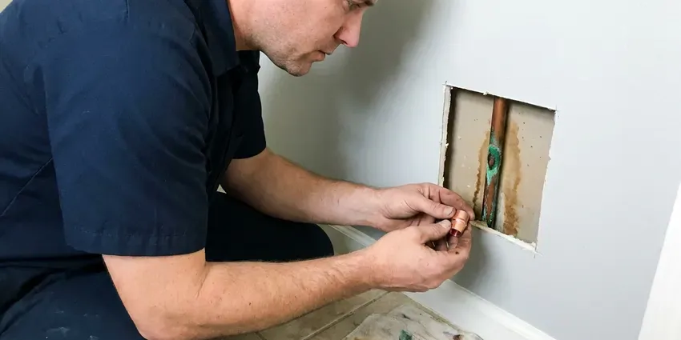

Foundation Leak Repair in Jamestown, ND
For dependable foundation leak repair in Jamestown, ND, trust HPN Plumbing. We promptly diagnose and resolve issues to prevent further damage.
- Prevent Structural Damage
- Fast Electronic Leak Detection
- North Dakota Plumbing Pros
- Protects Soil and Structure

Concerned About a Foundation Leak in Jamestown, ND?
Call now and we will locate the leak and explain whether a direct repair or a reroute makes more sense.
Expert Foundation Leak Repair in Jamestown, ND
HPN Plumbing repairs water and drain lines leaking beneath your home's foundation. Leaks under concrete can soak the soil, cause it to swell or settle and lead to cracks in slabs, walls and tile. We locate the leak with electronic, acoustic and pressure testing, then repair it with the least disruption possible.
Our expertise includes:
- Accurate leak detection technology
- Durable epoxy and hydraulic cement repairs
- Comprehensive exterior drainage solutions

Additional Plumbing Repair Services in Jamestown, ND
We offer expert plumbing repair services across Jamestown, ND to stop leaks, clear blockages, and keep every fixture working the way it should.


Customers
Why Choose HPN Plumbing for Foundation Leak Repair in Jamestown, ND?
We prioritize effective, lasting repairs over quick fixes, so your investment in foundation integrity is sound. Our skilled plumbers address the root cause of the leak, not just the symptoms.
- Durable Repairs, Our repairs use quality materials and proven methods for long-lasting results on your foundation.
- Accurate Locating, We locate the leak before cutting so we disturb as little concrete as possible.
- Lasting Solutions, Our repairs use high-quality materials such as waterproof sealants, epoxy injections, and concrete patching compounds designed to hold up in varying soil conditions.
Citywide Coverage
No matter which part of Jamestown you live in, we can get a technician to you quickly. Foundation leaks need prompt attention, and we treat them that way.
Experienced Team
Each technician at HPN Plumbing undergoes ongoing training to stay current on foundation repair techniques and safety protocols. You can trust our experts to handle your foundation leak with precision and care.
Safety-First Approach
Safety comes first in all our foundation leak repair projects, especially when working beneath concrete slabs. We strictly adhere to all local Jamestown building codes and safety regulations, protecting both your property and our team.
Trusted Certified Jamestown Plumbing Services Professionals
At HPN Plumbing, we take pride in providing certified plumbing services throughout Jamestown, ND. Backed by leading industry credentials, our experienced plumbers combine technical skill with genuine customer care. Whether it is repair, installation, or maintenance, we follow strict safety and quality standards to deliver long-lasting results you can trust.
Call Us Now PHCC Plumbing Contractor Recognition
PHCC Plumbing Contractor Recognition Better Business Bureau (BBB) Accreditation
Better Business Bureau (BBB) Accreditation Angi Certified Pro
Angi Certified Pro ISO 9001 Quality Management Certification
ISO 9001 Quality Management CertificationReliable Foundation Leak Repair Services in Jamestown, ND
Cost-Effective Foundation Leak Solutions in Jamestown, ND
We believe in upfront and fair pricing for all our foundation leak repair services in Jamestown, ND. Our technicians provide detailed estimates after a careful inspection, outlining the scope of work and materials needed. We aim to deliver affordable solutions that solve the problem permanently, preventing more expensive repairs down the line and extending the life of your home's foundation.

Slab Leak Detection & Repair in Jamestown
Slab leaks are known for being difficult to detect, often showing quiet signs like warm spots on the floor or a sudden jump in your water bill. HPN Plumbing uses acoustic and infrared technology to precisely locate these hidden leaks under your concrete foundation. Once identified, we offer tailored repair solutions, whether it's a spot repair, re-routing, or pipe bursting, to restore your plumbing system in Jamestown without extensive damage to your property.
Residential Foundation Leak Repair in Jamestown, ND
For homeowners in Jamestown, ND, a foundation leak is a serious concern that can impact everything from utility bills to structural stability. HPN Plumbing provides comprehensive residential foundation leak repair services designed to protect your home and investment. We focus on diagnosing the root cause of the leak, whether it's pipe corrosion, ground shifts, or installation defects, and providing a long-lasting solution tailored to your home's specific needs.
Crawl Space Foundation Leak Repair in Jamestown, ND
Crawl space foundations can develop leaks from plumbing, groundwater, or HVAC condensation. These leaks can lead to wood rot, mold, and structural damage if not handled quickly. Our team thoroughly inspects the crawl space and identifies the source of water intrusion. We then put in place solutions such as pipe repair, sump pump installation, or vapor barrier replacement to dry out and protect your crawl space in Jamestown, ND from future moisture issues.
Foundation Leak Detection in Jamestown
Accurate detection is the most important step in foundation leak repair. We isolate hot and cold lines and pressure test them to verify a leak exists. Then we use acoustic listening equipment and electronic line tracing to find the exact spot beneath the foundation. Thermal imaging helps verify hot water leaks by showing warm spots on the floor.
Exterior Foundation Leak Solutions in Jamestown
Many foundation leaks originate from exterior factors like poor drainage, overflowing gutters, or saturated soil. We inspect your home's exterior to identify these culprits. Our solutions include grading adjustments, French drain installation, and downspout extensions to move water away from your foundation. Good exterior water management is crucial for preventing hydrostatic pressure buildup against your foundation walls in Jamestown and keeping water out.
Direct Foundation Leak Repair in Jamestown, ND
When the leak is in an accessible spot and the rest of the pipe is in good condition, direct repair is often the most affordable choice. We cut a small opening in the floor, excavate to the pipe and replace the damaged section. The soil is compacted and the concrete is patched to match. Flooring can then be restored by your flooring contractor.

Basement Wall Sealing and Waterproofing in Jamestown, ND
For homes with basements in Jamestown, ND, wall leaks can be a significant concern. We offer comprehensive basement waterproofing services, including interior and exterior sealing. This may involve applying waterproof coatings, injecting cracks with polyurethane or epoxy, or setting up interior drainage systems. These measures stop water from penetrating porous concrete and masonry, keeping your basement dry and healthy.
Foundation Leak Repair Near Me in Jamestown, ND
When you search for "foundation leak repair near me" in Jamestown, ND, HPN Plumbing is your local expert. We are deeply familiar with the plumbing and foundation challenges common to homes in our service area. Our quick response times and local knowledge mean we can get to your property quickly to assess and address any foundation leak.
Our team is always ready to serve the Jamestown community, so residents have access to reliable foundation leak repair services whenever needed. We pride ourselves on being a trusted local resource, providing quality workmanship and exceptional customer service right here in your neighborhood.
HPN Plumbing at a Glance
- Licensed and insured plumbers serving Jamestown, ND
- 24/7 emergency service with same-day scheduling
- Clear written estimates, no hidden fees
- 4.9-star rated by 408+ North Dakota customers
Jamestown Map
Jamestown Information
- Population
- 15,691
- Area codes
- Local
- Service area
- Jamestown and communities within 40 miles
- Nearby
- Valley City, Devils Lake, West Fargo, Horace
Heavy, expansive clay soils are common in North Dakota, and they swell and shrink with moisture and frost, stressing foundations and buried pipe. That is why foundation leaks are a real concern in Jamestown, ND, and they can lead to major structural damage if left alone.
Expert Services
Trust our professionals for reliable HPN Plumbing solutions in Jamestown, ND.
Our Specialized Plumbing Services in Jamestown, ND
At HPN Plumbing, we provide a complete range of plumbing services across Jamestown, ND. From leak detection to full system installations, our team ensures fast, precise, and affordable service for both residential and commercial properties. Explore our core services below:


How Our Foundation Leak Repair Process Works in Jamestown, ND
We follow a clear process to find the leak, choose the right repair and protect your home.
Request a Quote
Call (701) 403-1348 and describe what you are noticing, such as warm floors, cracks or a moving water meter. We schedule leak detection quickly.
Detect and Plan
We pressure test and locate the leak, then review direct repair and reroute options. You get a written price for each.
Repair and Verify
We complete the chosen repair and pressure test the line. Concrete is patched or walls are closed, and we confirm the leak is stopped.
Frequently Asked Questions About Foundation Leak Repair in Jamestown
The cost of foundation leak repair in Jamestown, ND can vary significantly based on the leak's location, severity, and the repair method required. Minor spot repairs might range from $800 to $2,500, while more complex re-routing or tunneling could be $3,000 to $8,000 or more. We provide a detailed estimate after a thorough inspection.
While some very minor surface cracks might be sealed with DIY products, most foundation leaks, especially those involving plumbing or structural integrity, require professional expertise. Improper repairs can lead to greater damage, costly future fixes, and may not comply with local building codes. It is always best to consult with a professional.
In most cases, significant plumbing repairs involving your foundation in Jamestown, ND will require a permit so the work meets local building codes and safety standards. Permits are generally required for water heater installs, sewer work, new fixtures and remodels that change the plumbing layout. HPN Plumbing handles all necessary permitting on your behalf, so your repair is compliant and approved.
You can check your water meter with all fixtures off to confirm a leak. Locating the exact spot under a foundation requires specialized equipment and training.
Foundation leaks can be caused by various factors, including shifting soil that stresses pipes, corrosion of older copper lines from water or soil chemistry, poor pipe installation, and even large temperature swings. Heavy, expansive clay soils are common in North Dakota, and they swell and shrink with moisture and frost, stressing foundations and buried pipe. Many rural homes get water from private wells or rural water systems, and iron and sulfur odors are common complaints.
Many homeowner's insurance policies may cover sudden and accidental foundation leaks, particularly the damage caused by the leak, rather than the pipe repair itself. However, coverage varies, so it's best to check with your specific insurance provider.
Common signs include unexplained increases in your water bill, warm spots on the floor, the sound of running water when no fixtures are in use, visible cracks in the foundation or walls, and sudden drops in water pressure. Musty odors or visible moisture around the foundation in Jamestown are also warning signs.
Many policies cover the cost of accessing the leak and repairing resulting damage, but not the pipe itself. We provide detailed documentation to help with claims.
What People Are Saying About Our Plumbing Experts?

James P.
Our commercial plumbing system had a leak under the sink, and HPN Plumbing handled it professionally. The plumbers arrived quickly and restored everything without disruption to our customers.
Commercial Plumbing · Jamestown, ND
Emily R.
I called HPN Plumbing for plumbing repair, and the technician was fast, polite, and thorough. They explained the problem clearly and fixed it the same day. I will definitely hire them again. Highly recommended!
Plumbing Repair · Jamestown, ND
Mark T.
When our office needed drain cleaning, HPN Plumbing provided quick, reliable service. The plumber arrived on time and made sure every drain flowed perfectly before leaving. Very satisfied.
Drain Cleaning · Horace, NDRobert G.
The trenchless sewer replacement saved our front yard. They walked us through the camera inspection footage first so we knew exactly what we were paying for.
Sewer Line Replacement · West Fargo, ND
Sofia M.
Two new toilets installed in one visit, no mess left behind, and the tech even adjusted a faucet he noticed was dripping. Fair pricing and really friendly.
Toilet Installation · West Fargo, NDLaura S.
I scheduled a water heater replacement, and the team made the process smooth and affordable. The new unit works perfectly, and they cleaned up after completing the job.
Water Heater Replacement · Fargo, ND